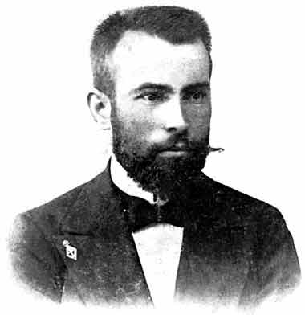
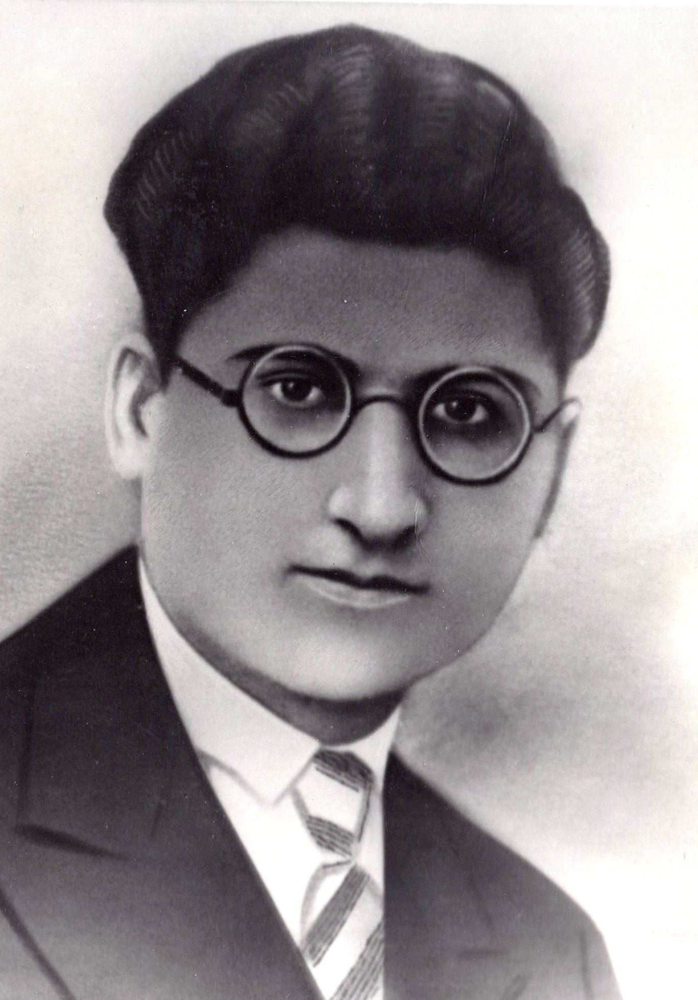

Welcome to my Education page
- Primary School
- High School
- Faculty
Primary School: OOU Krste Misirkov, Gevgelija
Krste Petkov Misirkov (Bulgarian: Кръстьо Петков Мисирков; Macedonian: Крсте Петков Мисирков; 18 November 1874 – 26 July 1926) was a philologist, journalist, historian and ethnographer.
In the period between 1903 and 1905, he published a book and a scientific magazine in which he affirmed the existence of a Macedonian national identity separate from other Balkan nations, and attempted to codify a standard Macedonian language based on the central Western Macedonian dialects. A survey conducted in the Republic of Macedonia (now North Macedonia) found Misirkov to be "the most significant Macedonian of the 20th century".

High School: SOU Josif Josifovski, Gevgelija
Josif Josifovski was born in Gevgelija on August 2, 1915, in a poor family. He studied as a scholarship holder in Kragujevac, Sumadija, [1] and then continued his studies at the Faculty of Law in Belgrade. He took part in all student demonstrations, protests and actions in Belgrade, for which he was arrested. [2] He became a member of the CPY in 1938.
After graduating, unable to find work in his hometown, Josif Josifovski left for Strumica in 1940, where he was employed as a trainee lawyer.

Faculty: UACS
The University American College Skopje (abbr. UACS) is a private university established in 2005. It is headquartered in Skopje, North Macedonia. The premises of UACS encompass 4,000 m2.
The library of UACS has 1500 titles or 6500 books.
Since 2008, the Library of UACS started with publishing. The first book which was issued is Osnovi na Statistika by Evica Delova, and after that UACS library has continued with publishing of other books: Makroekonomija by Tome Nenovski, Decentralizacija na vlasta vo Republika Makedonija by Sapuric Zoran, Kon Univerzitetite od Tretata Generacija by Hans Vizema, Zivotna sredina I oddrzliv razvoj by Zoran Sapuric, and others. Besides these books, the library has published a number of readers and scripts (23) and eight books in electronic form, according to the rules laid down by the home library (NUL) in North Macedonia, which also contained in the Rules of Publishing UACS.
My favourite courses:
- Computer Aplication
- Computer Systems
- Calculus
- Computer Interface